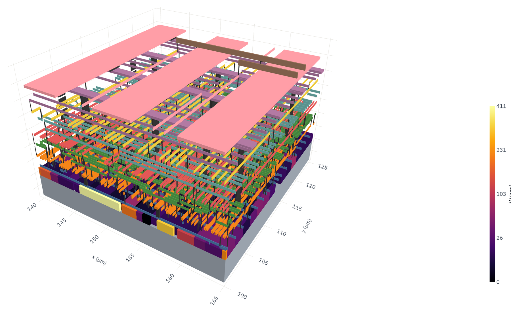
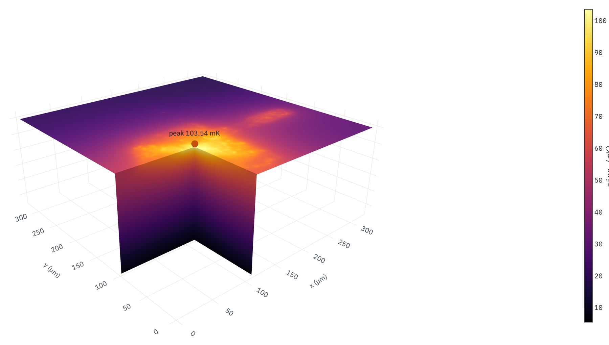

Layout-level resolution: the temperature of every cell and wire on a processor die
A full processor-core die resolved down to 50 nm, with every placed cell and routed wire in the model, on one CPU server.
Hot spots start at the scale of standard cells and wires, far below the 10–50 µm grids that package tools use. ThermStack APR resolves a full processor-core die down to 50 nm, with every placed cell and every routed wire of the layout in the model. The 50 nm result takes 6 min 45 s and 13 GB on one CPU server. At 1 µm, APR matches a full single-grid solve to 0.04 % at the peak with one fifth of the memory.

From the whole die to single cells and wires
The whole die stays in the model; the layout detail goes where the heat is. The design is a placed-and-routed RISC processor core: a 0.32 × 0.32 mm die with about 8,300 placed cells and nine metal layers. ThermStack reads the layout and the per-cell power directly. Every metal and via layer is taken from the drawn shapes at 25 nm, and each cell's power goes onto its own transistors.

The same answer as a full-grid solve
To check APR, the whole die was also solved on a single uniform 1 µm grid, which still fits in memory at that resolution. The APR 1 µm result matches it at the peak and across the whole die. Going on from 0.2 µm to 50 nm changes the peak of the layout area by less than 0.1 %: the result has converged at the layout scale.

Minutes and gigabytes, on one CPU server
| Run | Finest resolution | Wall time | Peak memory |
|---|---|---|---|
| Full single grid (reference) | 1 µm | 3 min 26 s | 33 GB |
| ThermStack APR | 1 µm | 3 min 5 s | 7.2 GB |
| ThermStack APR, layout level | 0.2 µm | 2 min 45 s | 8.8 GB |
| ThermStack APR, layout level | 50 nm | 6 min 45 s | 13.1 GB |
Bare die on an ideal heat sink, static power, steady state. Below about 0.1 µm, heat conduction in silicon departs from the bulk model, so the finest results describe the model, not a measurement. Wall time and memory from one 2026 CPU server; they will differ on other hardware.